Why Android malware classifiers go wrong — and why it matters.
Speaker tip:Start by asking the audience: 'Has anyone here used an Android phone? Your phone is a target.' Pause for effect. Then transition: 'Let's see why this matters for security.'
📱
71% Mobile Market
Android holds 71% of global mobile OS market. Millions of users = millions of targets.
🦠
3M+ New Samples / Month
Over 3 million NEW malware samples discovered every month. Attackers never stop.
😰
Classifiers Degrade Fast
Train on last year's data. Get near-random predictions this year. That's concept drift.
Key Fact
Without updates, Android malware classifiers can degrade to RANDOM performance within ~2 years
This is called CONCEPT DRIFT — the world changed, the model did not
Speaker tip:Emphasize: 'The model STILL gives an answer. It still says "this is malware" or "benign". But it's basically guessing. That's the danger.'
👤 Speaker 1
Part 1 · Two Types of Drift
Two Types of Concept Drift
Intra-class Drift 🔄
A known malware family changes — new variants appear.
Example
Xavier malware: 5 different versions in just 8 months. Same family, new tricks.
Mostly affects binary detection: is it malware or not?
Inter-class Drift 🚀
A completely NEW malware family appears. The model has never seen this class.
Example
In 2023 alone, 10 new Android banking malware families were discovered, each with different goals.
Affects multi-class classification: which family is this?
The paper's focus
Dream focuses mainly on INTER-CLASS drift — new malware families appearing. This is the harder problem: the model needs to recognize a family it has NEVER seen before.
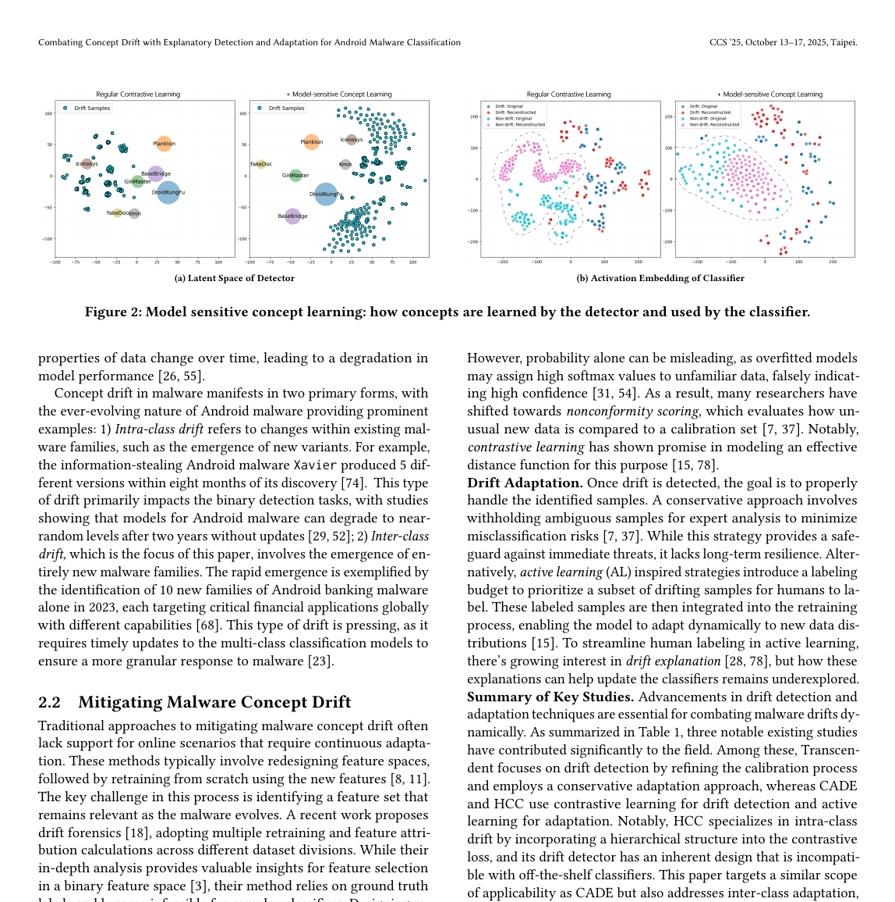
Paper visual — Concrete examples of intra-class and inter-class drift, which makes the transition into Dream's target setting much clearer.
👤 Speaker 1
Part 1 · Current Approach
How Do People Try to Fix It?
The standard two-step approach used by most research.
1
DRIFT DETECTION — Find weird samples
Periodically scan new incoming samples. Use statistics or ML to find samples that look "far" from the training data.
2
DRIFT ADAPTATION — Update the model
Send weird samples to malware experts. Experts label them. Add to training set. Retrain. Simple and straightforward.
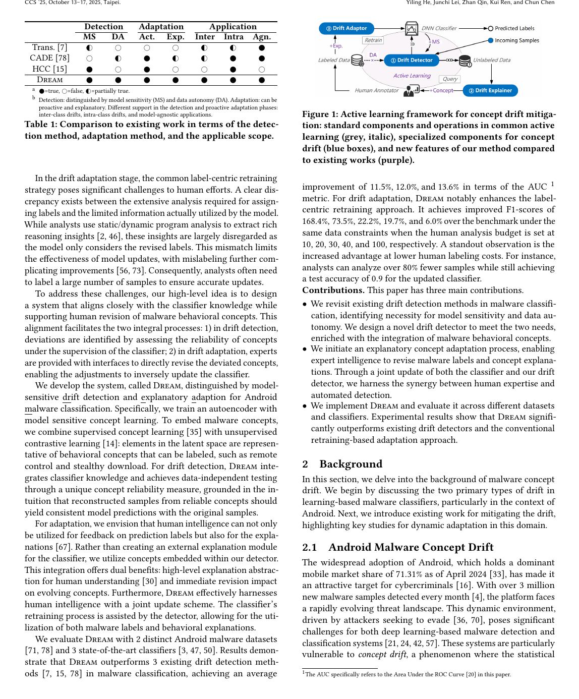
Fig. 2 — Traditional two-step active learning: drift detection → expert labeling → retrain. The paper identifies two key limitations in this loop. Source: paper Figure 2.
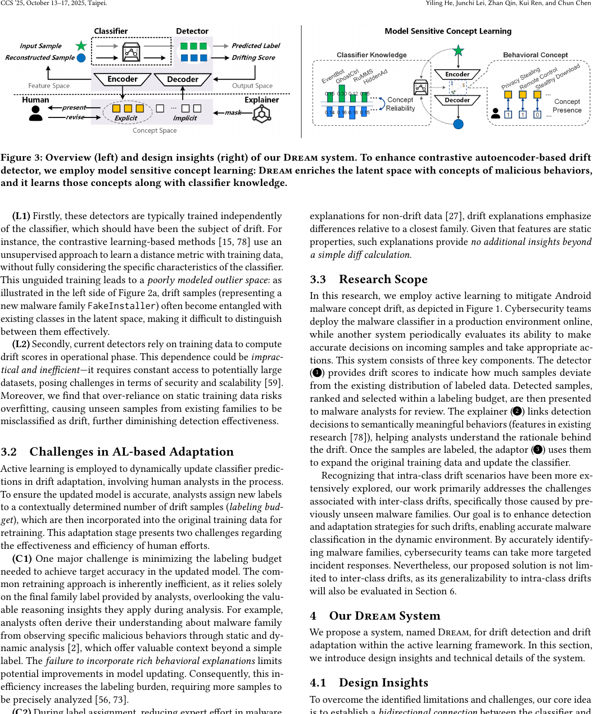
Fig. 3 — Dream's two-stage loop: (left) Detection uses autoencoder + classifier comparison with no training data needed; (right) Adaptation uses expert concept revisions + joint update. Source: paper Figure 3.
Speaker tip:Draw on the board: [New Samples] → [Detector] → [Experts Label] → [Retrain]. Ask audience: 'What could go wrong with Step 1?' Then: 'What could go wrong with Step 2?'
👤 Speaker 1
Part 1 · Two Problems
Two Big Problems with This Approach
Problem 1: Blind Detector 🔍
Most drift detectors train their OWN model. They ignore what the TARGET classifier actually uses to decide.
Analogy
Like a doctor diagnosing a patient without knowing what the patient already knows. Useless.
Problem 2: Expert Knowledge Wasted 💔
Experts do deep analysis — static analysis, dynamic analysis, behavioral reasoning. But the model only gets a LABEL. All that WHY is lost.
Result
Need TONS of labeled samples to make retraining work. Very expensive.
Dream's Goal
Address BOTH problems: make detection model-sensitive AND make adaptation use expert knowledge fully — not just a label.
👤 Speaker 1
Part 1 · Quick Check 🧠
Quick Check — Think Before We Move On!
❓ What is concept drift in malware classification?
❓ Which type of drift does Dream mainly focus on?
👤 Speaker 2
Part 2 · Dream Overview
Meet Dream — A Two-Pronged Solution
Dream fixes BOTH problems of the old approach.
🧠
Knows the Classifier
Dream's detector learns what the classifier actually uses. Not something independent. It's model-sensitive.
🔒
No Training Data Needed
Old detectors need training data at test time. Dream doesn't. That means: faster, safer, more private deployment.
💬
Explains the Problem
When drift is found, Dream shows WHICH concept caused it. Experts fix the ROOT CAUSE, not just label samples.
Paper Figure — The complete Dream loop: model-sensitive detection on the left, concept-guided adaptation on the right.
Speaker tip:Think of Dream as a doctor that KNOWS your medical history. It doesn't just guess — it knows what you already know, so it can tell when something genuinely changed.
👤 Speaker 2
Part 2 · Concepts
What Are 'Concepts' in This Paper?
A concept = a type of malicious BEHAVIOR, not just a family label.
b0: Privacy info stealing (SMS, contacts...)
b1: Abusing SMS / Calls
b2: Remote Control
b3: Bank / Financial Stealing
b4: Ransomware
b5: Abusing Accessibility
b6: Privilege Escalation
b7: Stealthy Download
b8: Aggressive Advertising
b9: Premium Service Abuse
Why This Matters
A malware family can have MULTIPLE behaviors. Two samples in the same family may behave very differently. That's why concepts are more informative than just family labels.
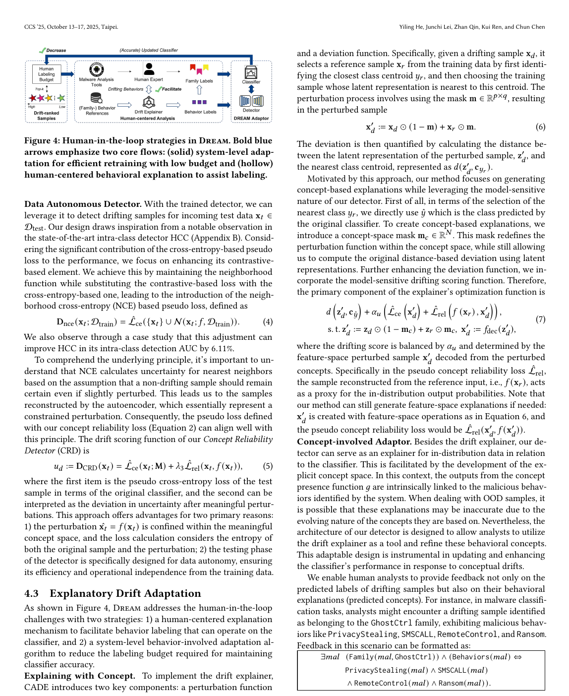
Paper visual — Concepts live in the latent space, which is exactly why expert revisions can directly steer adaptation.
👤 Speaker 2
Part 2 · Detection Trick
The Core Detection Trick 🪄
How Dream detects drift WITHOUT any training data at test time.
① x
→
② x̂ rebuild
→
③ M(x)
→
④ M(x̂)
→
⑤ Compare!
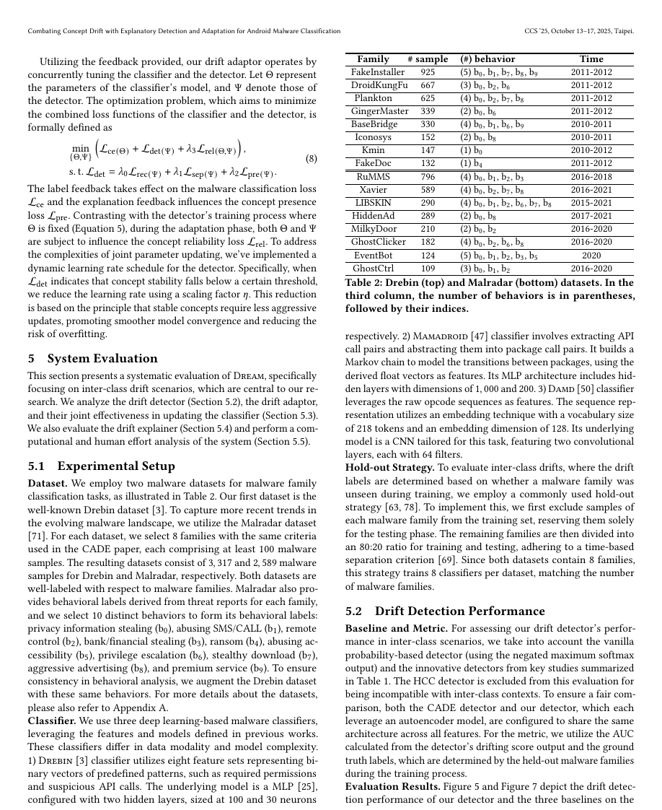
Fig. 4 — Dream's detection: rebuild sample via autoencoder → compare classifier predictions M(x) vs M(x̂). Divergence = concept drift. No reference data needed at test time. Source: paper Figure 4.
Predictions AGREE ✓ → Low drift score
Good. The classifier still "gets it" even when looking at a rebuilt version. The concepts used are still reliable.
Predictions DISAGREE ✗ → High drift score
Bad. The rebuilt sample looks different to the classifier. Something genuinely changed in the malware world. → ALERT!
Speaker tip:Draw on board: x → [AutoEncoder] → x̂ → [Classifier M] → Compare M(x) with M(x̂). Ask: what does it mean if they differ? Exactly — the concepts used by the detector don't match what the classifier expects.
👤 Speaker 2
Part 2 · Concept Learning
How Dream Learns Concepts (Technical)
Two Training Signals
1
Supervised: Align with Classifier
Link latent directions to the classifier's activation patterns. So Dream knows what the classifier FEARS.
2
Contrastive: Same = Close
Samples with same concept cluster together. Different concepts are pushed apart. Clean separation.
The Full Objective
L = λ₀L_rec + λ₁L_sep + λ₂L_pre + λ₃L_rel
Fig. 5 — Dream's four-term loss: reconstruction (L_rec), concept separation (L_sep), concept presence (L_pre), and classifier agreement on rebuilt samples (L_rel). L_rel is the key innovation making detection model-sensitive. Source: paper Equation (1).
L_rec: reconstruction quality
L_sep: concept separation
L_pre: concept presence (b0–b9)
L_rel: classifier agreement on rebuild
Key: L_rel is what makes Dream MODEL-SENSITIVE — it optimizes for classifier agreement, not an independent distance.
👤 Speaker 2
Part 2 · Adaptation
Making Adaptation Work Better
Old Way
Expert studies malware.
Expert says: 'this is family X'.
Model gets only a LABEL. All reasoning is lost.
Cost
Need 80–100 labeled samples to make retraining work. Very expensive.
Dream's Way ✨
Dream shows: WHICH concept drifted?
Expert gives: label PLUS concept revision.
Classifier AND detector both update — joint update.
Savings
Same accuracy with 76.6% fewer labeled samples. Far more efficient.
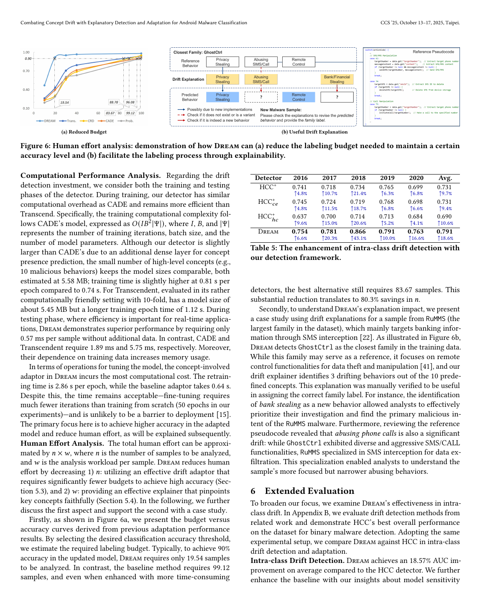
Paper evidence — Extra adaptation and explanation results, placed here because this slide is about why concept-level feedback beats label-only retraining.
👤 Speaker 2
Part 2 · Interactive Demo 🎮
Try It Yourself! 👇
Click to Reveal: Detection Step-by-Step
① Sample arrives: "Xavier v6" (new variant)
A new sample labeled 'Xavier v6' arrives. It's the same family as Xavier, but with new behaviors.
→ Click to see what happens
② Dream rebuilds: x̂
Dream's autoencoder tries to rebuild the sample. Because the concept space learned from training, the reconstruction uses OLD concept patterns.
→ Click to see what happens
③ Compare M(x) vs M(x̂)
The classifier predicts on original x: 'Xavier family'. On rebuilt x̂: also 'Xavier'. They AGREE. Low drift score. This variant doesn't confuse the classifier.
→ Click to see next scenario
④ New family appears: "EvilBank v1"
A brand NEW family 'EvilBank v1' appears. Completely unseen in training. Dream rebuilds it using OLD concept patterns. The rebuilt version has very different banker-behavior concept. The classifier gives different predictions for x and x̂. → HIGH DRIFT SCORE. Alert!
→ Click to continue
Your Turn: Predict the Drift Score! 🎯
Scenario: Old malware 'BaseBridge' gets a minor update (same behaviors, slightly different code). What is the drift score?
Scenario: A BRAND NEW banking malware 'GhostBank' appears. It uses stealth-download + remote-control behaviors never seen in training. What is the drift score?
👤 Speaker 3
Part 3 · Setup
How We Tested Dream
Datasets
Drebin — 3,317 samples, 8 families, 2010–2012
Malradar — 2,589 samples, 8 families, 2015–2021
Extended — 4,410 samples, 180 families, 2015–2020
Malradar has 10 behavioral concepts (b0–b9) labeled for each sample.
All are real, widely-used Android malware classifiers.
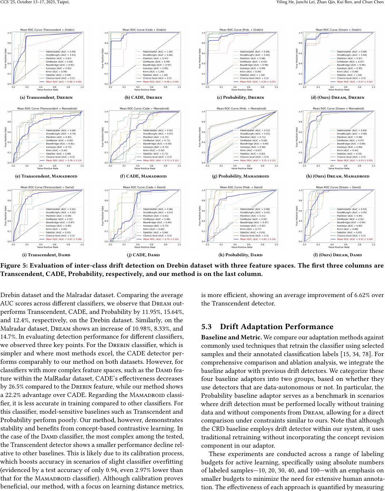
Fig. 6 — Dataset overview: Drebin (3,317 samples, 8 families, 2010–2012), Malradar (2,589 samples, 8 families, 2015–2021), Extended (4,410 samples, 180 families, 2015–2020). Hold-out by family simulates brand new family appearance. Source: paper Table 1.
Testing Method: Hold-out by Family
For each family: remove it from training → use ONLY for testing. This simulates a BRAND NEW family appearing. 8 classifiers per dataset = 8 test scenarios each.
👤 Speaker 3
Part 3 · Key Numbers
The Numbers That Matter Most
76.6%
Less Labeling
To reach 90% accuracy: Dream = 19 samples. Best old method = 84. Same result.
11–14%
AUC Boost
vs Transcendent: +11.5%, vs CADE: +12.0%, vs Probability: +13.6%. Consistent.
0.57ms
Per Sample
Detection speed. 3x faster than CADE (1.89ms). 10x faster than Transcendent (5.75ms). Real-time ready.
+18.6%
Intra-class AUC
Also beats HCC on intra-class drift (new variants within same family). Dream works for both types.
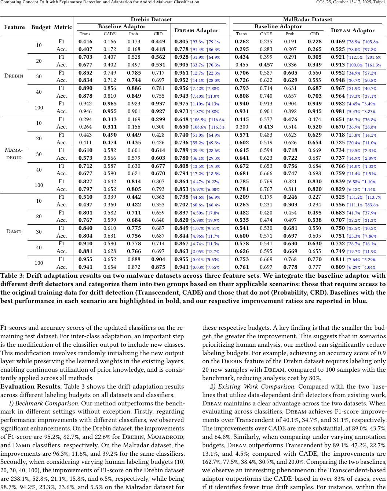
Fig. 7 — Dream consistently outperforms all baselines: +11–14% AUC vs best competitor. 0.57ms detection latency (3× faster than CADE, 10× faster than Transcendent). 76.6% labeling reduction to reach same accuracy. Source: paper Table 3 & Table 5.
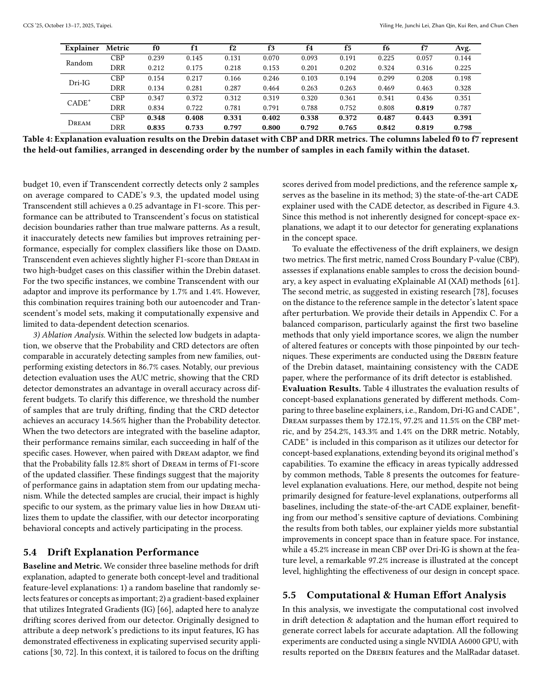
Paper tables — Backup evidence for detector AUC, latency, and adaptation sample efficiency.
👤 Speaker 3
Part 3 · Comparison
Dream vs Existing Methods
Property
Transcendent
CADE
HCC
Dream ✓
Model-Sensitive Detection
✗
✗
✗
✓
Data Autonomy (no train data at test)
✗
✗
✗
✓
Explanatory Adaptation
Partial
✗
✗
✓
Works for Both Drift Types
✗
Partial
Partial
✓
Fast Detection
5.75ms
1.89ms
—
0.57ms
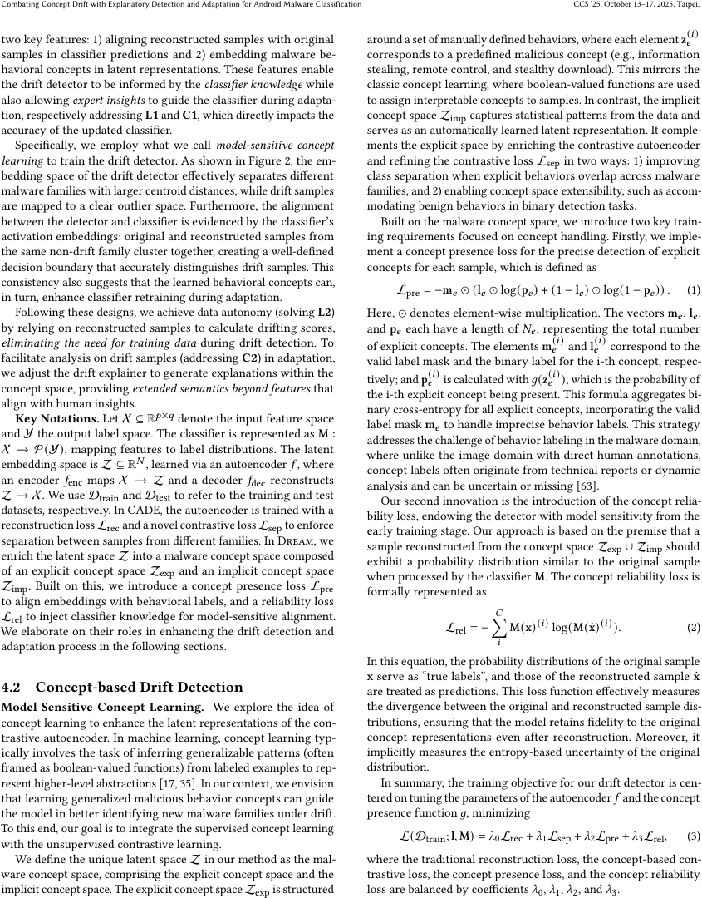
Fig. 8 — Dream is the only method that covers model-sensitive detection, no train-data dependency at test time, explanatory adaptation, and both drift settings together.
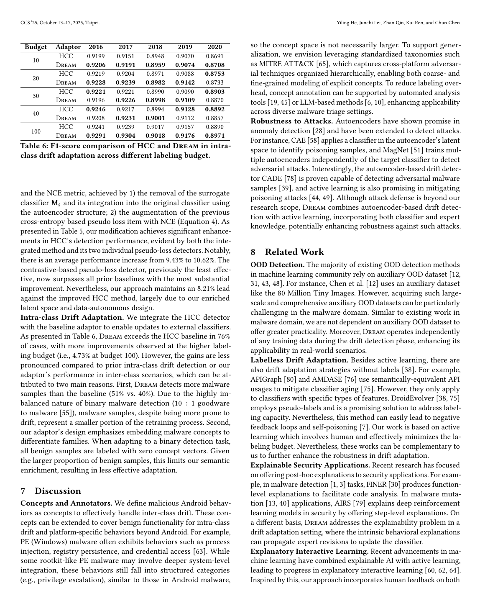
Paper evidence — More results to reinforce that Dream's gains are consistent instead of depending on one cherry-picked case.
👤 Speaker 3
Part 3 · Knowledge Check
Final Check — Before Q&A! 🧠
❓ Why is Dream's detection faster than CADE?
❓ What makes adaptation in Dream more efficient than traditional methods?
👤 Speaker 3
Part 3 · Summary
Three Things to Remember
🔍
Smart Detection
Classifier + autoencoder in one system. If the classifier changes its mind on a rebuilt sample — that's drift. No training data needed.
💬
Experts Do More
Not just label — explain WHY. Concept-level feedback goes into the model. Every sample is far more powerful.
🚀
Big Real Savings
76.6% less labeling work. 3x faster. Works for new families AND new variants. All in one system.
Paper
CCS '25 · DOI: 10.1145/3719027.3744792
Yiling He, Junchi Lei, Zhan Qin, Kui Ren, Chun Chen
Zhejiang University · State Key Laboratory of Blockchain and Data Security
🎤
Questions & Discussion
What would you like to ask about Dream?
🔍
Detection
How does the concept reliability loss actually work in practice?
💬
Adaptation
How do experts actually provide concept revisions? Is there a UI?
🚀
Real World
Could Dream be used for other domains beyond malware?